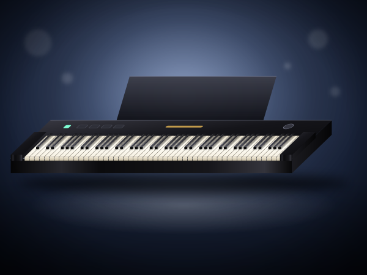
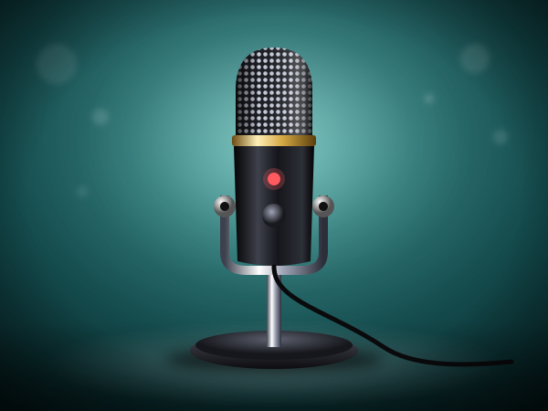
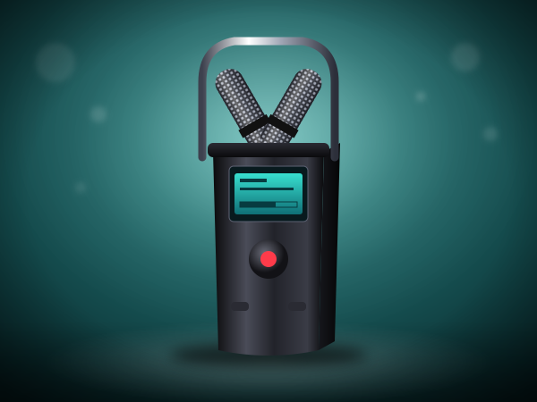

P71 88-Key Weighted Digital Piano
88 weighted-action keys, sustain pedal included. For an adult beginner I look at the keys before anything else.
Check today's price on AmazonLeave your email, phone and how you found us. I read every message and listen to every recording myself.
Home / Shop
Online Piano University shopGear for adult piano students, chosen by a working concert pianist and professor. Every category tells you what to look for and how it helps you learn.
Affiliate disclosure. As an Amazon Associate I earn from qualifying purchases. Some links on this page are affiliate links; buying through them costs you nothing extra.
Illustrations show the type of product; see the exact item and its photos on Amazon.
This is not a general store. It is a short, curated list from Dr. Maria Pisarenko, D.M.A., concert pianist and university piano professor, of the instruments and tools my adult students actually need: a keyboard with a real touch, headphones for daily practice, a bench at the right height, a light to read by and a simple way to record yourself and send me your playing for free feedback.
I recommend this gear because it is what my adult students need to work through my free 41-lesson course and, later, to use with my upcoming method books. I am a concert pianist and a university piano professor, and these are the kinds of tools I look at first when a student asks what to buy.
Each page starts with the question a buyer asks and ends with a way into the lessons.
88 keys, weighted action, real piano sound.
Portable keyboards and USB controllers.
The right height changes how you sound.
Sustain pedals and pedal units.
Practice any hour without disturbing anyone.
Microphones, lights and phone mounts.
Powered monitors and desktop speakers.
Method books, theory, editions.
Metronomes, stands, lights, journals.
Clip-on and desk lights for reading music.
Covers, polish, humidity.
Listening, calm, sound.
Gifts, textiles and decor with a musical touch.
A few special-occasion splurges.
Eight places to start, each described only by its own listing.

88 weighted-action keys, sustain pedal included. For an adult beginner I look at the keys before anything else.
Check today's price on AmazonThe listing says 88-note Roland digital piano with speakers. I would want to try the touch before committing to any digital piano.
Check today's price on AmazonIn short, 88 weighted keys, portable Yamaha P-225. A good piano sound matters more to me than a long list of extra voices.
Check today's price on Amazon
Closed-back studio monitor. Practice is easier at any hour with good headphones.
Check today's price on AmazonI look for comfort over a long session and an honest sound. Here: closed-back studio headphones.
Check today's price on Amazon
In short, cardioid USB condenser. Pick something you will really use every week.
Check today's price on Amazon
The listing says H4 Essential Handheld Recorder. A good clip is all a teacher needs to give feedback.
Check today's price on AmazonWeighted keys are what teach a hand to shade soft and loud. Here: 88-note compact digital piano from Roland.
Check today's price on AmazonAn 88-key digital piano with weighted keys, a sustain pedal, an adjustable bench and a pair of closed-back headphones. Nothing else is needed to start.
No. The 41-lesson course is free and so is feedback on your playing. The shop is for when you are ready for your own instrument.
Every category is chosen by a concert pianist who teaches adults and says why it helps you learn: touch, daily practice, correct height, reading music, and recording yourself.
Yes. As an Amazon Associate I earn from qualifying purchases, at no extra cost to you. I do not print prices; open the listing on Amazon to check today's price.
You do not need to buy anything to begin. The course is free, and so is feedback on your playing.
▶ Free 41-lesson course Private online lessons Free feedback on your playing Books & Gear
The shop exists to support your learning. The learning itself is free: all 41 lessons of my beginner course are published, and I give feedback on your playing at no charge.
▶ Start the free 41-lesson course Send me your playing for feedback → Give online piano lessons
Send a message or attach a recording. Email, phone and how you found us help me answer you properly.
The first steps to start the right way — no bad habits to un-learn. Join fellow beginners learning with a real university teacher.
✓ Thank you — check your inbox!
No spam — just piano. Unsubscribe anytime.
Every decade brings its own music and its own obstacles. Find the plan for yours:
Learn piano in your 20s · Learn piano in your 30s · Learn piano in your 40s · Learn piano in your 50s · Learn piano in your 60s · Learn piano in your 70s and beyond
Online Piano University is run by one teacher. I read every message and listen to every recording myself.
Contact
maria@onlinepianouniversity.com
Full contact page
Feedback on your playing
Free 41-lesson course
Piano lessons by age
Free Starter Guide
✓ Thank you — check your inbox!
Follow along